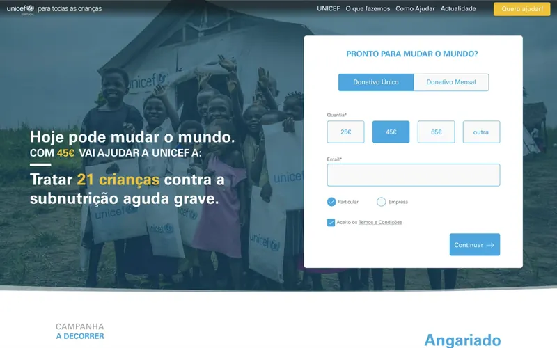
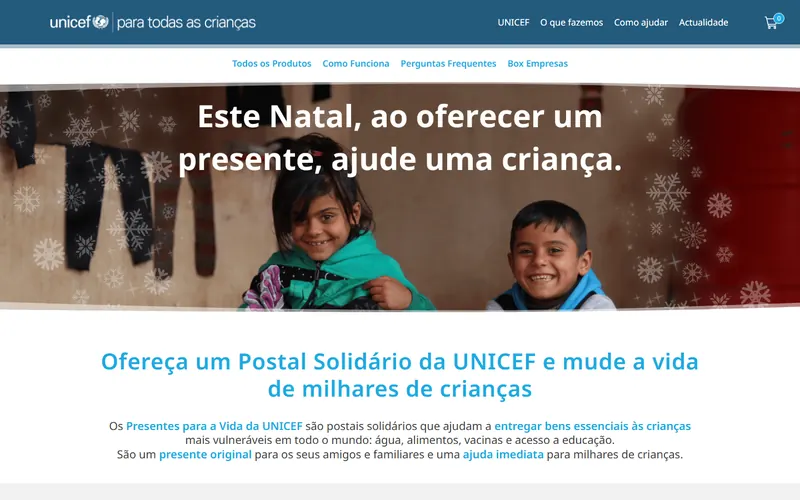

Making it easy to give to UNICEF, once, monthly, or as a gift
UNICEF Portugal needed a donation page for one-off and monthly gifts, plus a shop that sells real aid as presents. I designed both sites and built the whole frontend.
- Designed both sites, from user flows to final UI
- Built the entire frontend as custom Gutenberg blocks in React, so UNICEF's team runs campaigns without a developer
- Designed the form around Portuguese donors: NIF for tax receipts, Multibanco, MB Way and direct debit for monthly giving
UNICEF's team launches campaigns without a developer
And the donation page scored 95 on PageSpeed at launch
Built at WidgiLabs
Read case notes
Donors choose between a one-off and a monthly gift, and every amount shows what it pays for. Individuals and companies get their own path, with the NIF field for tax receipts.
Gifts for Life works like a shop: people buy vaccines or school kits for someone else, add the recipient's name and a message, and send the gift card by email or as a printable PDF.
